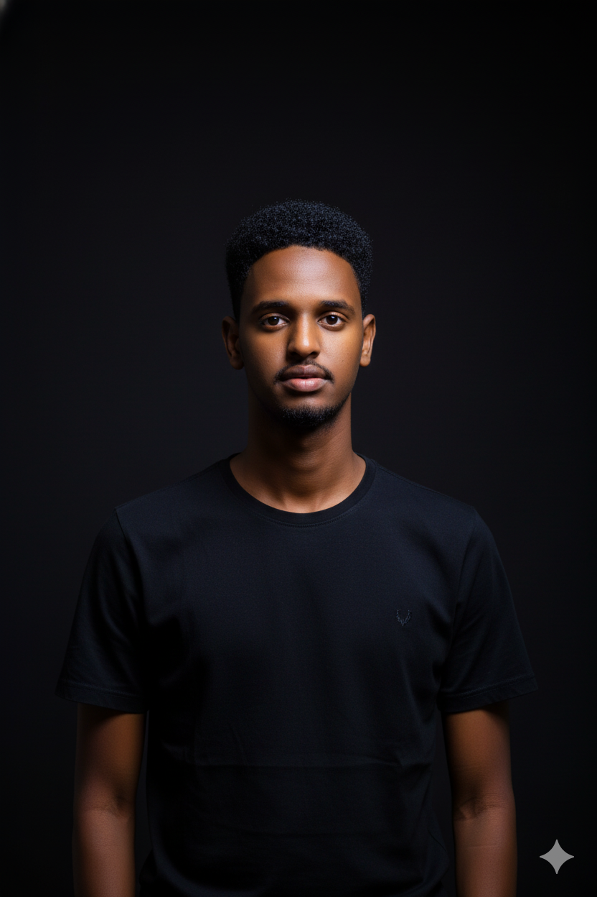
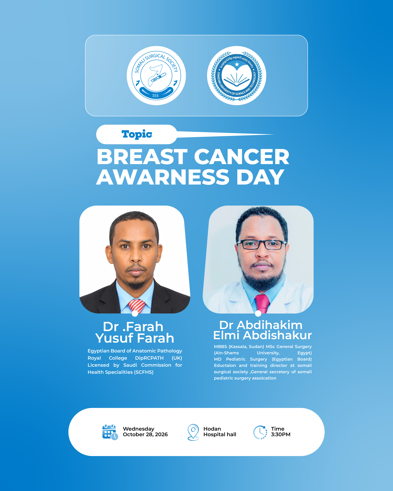

Ogaal Solutions
Abuurista naqshadaha xayeysiiska, qoraallada muuqaalka iyo qorshaha suuq-geynta baraha bulshada.
Salaan! Waxaan ahay Hassan Mohamed Osman (Hassan Guure), naqshadeeye garaafeed, tifaftire muuqaal iyo khabiir suuq-geyn dijitaal ah. Waxaan xiiseeyaa hal-abuurka, teknoolojiyadda iyo dhisidda xalal dijitaal ah oo ganacsiyada ka caawiya inay horumar sameeyaan.

Waxaan ahay qof hal-abuur jecel oo ku shaqeeya naqshadeynta garaafyada, tafatirka muuqaallada iyo suuq-geynta dijitaalka ah. Waxaan ahay aasaasaha iyo Agaasimaha Hal-abuurka ee Arko media, halkaas oo aan diiradda ku saaro abuurista naqshado qurux badan, muuqaallo tayo leh iyo fikrado suuq-geyn oo ganacsiyada ka caawiya inay gaaraan macaamiishooda. Waxaan si joogto ah u horumariyaa xirfadahayga, gaar ahaan dhinaca Web Development, si aan u yeesho awood aan ku abuuro adeegyo iyo xalal dijitaal ah oo casri ah.
Replace this text with your own story.
Halkan waxaad ka arki kartaa qaar ka mid ah mashaariicda iyo shaqooyinka aan ka qabtay .
Abuurista naqshadaha xayeysiiska, qoraallada muuqaalka iyo qorshaha suuq-geynta baraha bulshada.

Naqshadeynta xayeysiisyada iyo diyaarinta fikradaha ololayaasha suuq-geynta ee bacaha deegaanka u wanaagsan.

Ka shaqeynta naqshadeynta garaafyada, diyaarinta agabka xayeysiiska iyo abuurista muuqaalada loogu talagalay wacyigelinta iyo soo bandhigista hawlaha ururka..
Have a project or a question? Send a message.